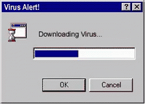

Something Awesome: Research - Virus Behaviour
Contents
Do I sound like I know what I’m talking about? Sort of.
But take a look at The Art of Computer Virus Research and Defense and be astounded.

What is a virus
According to Google, a (computer) virus is “a piece of code which is capable of copying itself and typically has a detrimental effect, such as corrupting the system or destroying data.”.
Cool, it’s piece of software that does bad things.
What is malware
You’ve heard of many different types of __-wares. Freeware, adware, spyware, shareware, bloatware etc…
They are names used to describe the nature of the application.
The mal in *mal*ware is short for malicious, and describes software that is written with malicious intent.
For example, data theft, identity theft, holding your files for ransom (ransomware).
Recipe for Disaster
How does a virus get into your computer and wreck havoc?
Stage One - The Invitation
You are firstly targeted by a malicious party.
Other times, the virus is left in the open, waiting for someone to fall into the trap.
Like those people with all of those browser toolbars.
This invitation stage could include sending an email to a victim which contains a dodgy file.
Or just having the payload disguised an online download for a ‘free movie’.
Stage Two - The Acceptance
This stage often occurs because of human error.
Sometimes it’s because we are uneducated and naive, and other times it’s because of greed or self-interest - especially because we love free things.
We often willingly open things out of curiosity, clicking “Yes” on whatever popup comes up.
And just like that, the virus has found its way into our system, and has even been given permission to execute.
Of course, people these days know better than that.
Vulnerabilities of our computer system are often exploited to allow the malicious party to perform RCE (Remote Code Execution) attacks.
Flaws in our software, our operating system, or even our hardware are all endpoints to which an attacker could attempt to enter through.
Stage Three - The Party
Once the virus payload has entered the system and has run, it’s all over… ish.
Virus Entry Points / Attack Vectors
Application / Software Vulnerabilities
Flaws may exist in applications which give us access to the underlying OS.
By exploting the application’s flaws, you can gain access to a terminal or shell for you to carry out your next attack stage.
System Vulnerabilities
Something not exactly in our control, are the vulnerabilties of the system we use, rather than the software and applications that we use.
Cryptographical vulnerabilties, protocol vulnerabilities, OS vulnerabilities, etc.
autorun.inf (Windows XP)
Up until Windows XP, a file called autorun.inf located (if it exists) at the root of all storage device. Generally for removable mediums (USB drives, CDs), it allowed people to add extra options to the right-click menu of the drive, and to also allow autoplay behaviour as well as default open behaviours.
A good intention, but it was also used maliciously to spread viruses.
In fact, you were able to make just opening the drive launch the virus.
It was so transparent you wouldn’t even know you were infected.
They therefore became very effective in spreading from computer to computer via USB drives.
From Windows Vista and above, the auto-autorun functionality was removed - good.
Macros
Virus payloads encoded into document macros were, and are still quite popular.
With calculations and spreadsheets becoming more complicated - macros were needed to carry out custom functionality, rather than having unsightly cell formulas. But they can be misused to download and execute viruses.
We often see these viruses in PDF, DOC(X) and XLS(X) files - that opened - prompt the user to “Allow macros”.
This attack vector is most dangerous when the document has legitimate macros that are needed - as you are unable to selectively enable macros.
Obscurity / Stupidity
On most Windows installations, the filename of an extension is disabled by default.
If I named my virus Finance.pdf.exe, you might only see Finance.pdf or Finance.
If I set the program icon to a PDF document icon, it would look just like a PDF document - and you wouldn’t even realise it was actually a program
Or, maybe all it takes it us to be dumb and just double click on a virus.
Emails
Emails can be a harbinger of viruses.
Often we would trust the contents of an email depending on who had sent it.
But it’s not that hard to modify the “From” header of your email, and just like that you’re able to send an email as anyone.
As you can attach files to emails, they can be dangerous.
In addition, email viruses can easily propagate - whereby they can look at all the addresses you’ve had previous correspondance with, and send them an infected email.
Virus Detection
What makes a virus a virus
How do you determine whether a program is a virus or not?
Fun Activity: Have a look at the EICAR test virus - 68 bytes of sheer goodness.
You’d probably have to disable your system’s antivirus to read the contents…
Virus Signatures
A virus signature is a sequence of bytes present in the virus binary that can identify that virus.
Antivirus softwares use a large database of virus signatures, which they compare each file in the system against.
Heuristic (Behaviourial) Analysis
Heuristics refer to the investigation of virus behaviour through analytical means, rather than just searching for virus signatures.
Beneath all the magic of code obfuscation, encryption and stealth mechanisms - at the very end, the virus will perform system operations.
One form of heuristical analysis is emulating the file, to figure out what it does.
A software that I often use when looking at viruses is Sandboxie, which isolates your computer’s files and resources from the program.
Sandboxie logs the files and resources that were requested and accessed by the computer - giving you a good insight into what and how the program is doing. I’d also recommend Sandboxie-ing your program in a virtual machine - just to be safe.
Virus Anti-Detection
If you were to write a virus, how would you avoid your viruses being detected?
I would say that it’s quite simple to avoid your virus from matching a virus signature - Write your own virus.
Virus signatures only work because security researches have gotten hold of a known virus, and have analysed it to find a signature.
In other words, a new virus won’t have a known signature - and would not be able to be detected.
Avoiding heuristical analysis is more difficult, but evidently still possible.
Sparse viruses execute only some of the time (perhaps once every 10 computer boots). Should a virus not do anything during its execution for heuristical analysis - no malicious activity would be seen, and the virus would not be flagged. Perhaps if the virus realises that it is a sandboxed / virtualised environment, it might stay dormant.
Metamorphic viruses rewrite themselves so that they look completely different to what they originally looked like.
Using different methods to perform the same function would completely modify the virus signature.
Polymorphic viruses decrypt and encrypt their contents with a new key each time it runs, so that their code can not be easily detected through static analysis. After the decryption of the program, heuristical analysis will probably be able to detect these.
Virus Behaviours
Duplication / Multipart
Viruses often clone themselves, that even if you delete one copy of the virus, it exists somewhere else.
A category of viruses known as worms try to replicate themselves onto other computer systems.
Stealth
To prevent themselves from being detected (straight away), viruses incorporate stealth mechanisms.
Possibly by changing their code, or sitting dormant until every nth execution.
They might also hook onto system calls, intercepting and overridding system calls that would reveal virus presence.
Startup
Viruses often start automatically when the system turns on, and create startup entries into your system.
User / Kernel
User mode (application level) viruses run as if they were like any other software.
Kernel mode (system level) viruses on the other hand, operate with the highest privilege.
Whilst user mode viruses can still cause great damage, they cause the most when they execute on the system level.
It makes removal of the virus extremely difficult, as any application level software and tool will be unable to remove it.
For example, some rootkits infect themselves into the core files of the operating system.
You would be unable to remove them from inside the operation system, and would have to perform offline removal.
Aside: Ransomware (Crpyto)
One sort of virus is ransomware (you’ve probably heard of the somewhat recent WannaCry attack).
These viruses encrypt your files with a key that you must pay for in order to decrypt your files (or they won’t even give you the key after payment)
Your friends at Kaspersky have released ransomware decryptors should you happen to be infected. (Though of course, your ransomware program has to be on their list)
Experience
When I was younger, I remember my Windows XP installation being infected by a virus which had required me to purchase a ‘antivirus software’ to remove the virus.
While it was running, it had prevented me from opening any programs and showed a popup prompting me to purchase their antivirus software.
It also had propagated itself into every possible startup search folder, and created an entry into every startup registry folder, as well as the autorun.inf files of all my drives and flash disks.
It had also replaced my \Windows\System32\taskmgr.exe (Window’s task manager program), preventing me from using it to kill the virus.
After doing abit of testing, I had realised that the virus prevented any new executable from opening, except those that were named taskmgr.exe.
I created an empty text document and named it taskmgr.exe, to which in my delight gave me a `taskmgr.exe is not a valid Win32 application’.
Instead of showing me the popup, the program had reached the stage where the OS actually tried to open it.
I copied a genuine copy of Task Manager from my other computer to the infected computer, and thankfully the actual task manager was able to run - and I was able to quit the virus, and clean my system up. No files were harmed, yay!